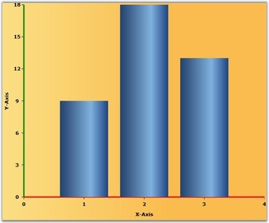

The Chart Axis Lines can be customized using the LineStroke and LineStrokeThickness properties. The LineStroke property is used to set the line color, and LineStrokeThickness is used to set the line thickness in the chart area.
The Small tick lines can be customized using the SmallTicksStroke and SmallTicksStrokeThickness properties.
|
[XAML]
</syncfusion:Chart> <syncfusion:Chart Background="{StaticResource ChartBackground}"> <syncfusion:ChartArea> <syncfusion:ChartArea.PrimaryAxis> <syncfusion:ChartAxis LineStroke="Red" LineStrokeThickness="3" ShowGridLines="False"/> </syncfusion:ChartArea.PrimaryAxis>
<syncfusion:ChartArea.SecondaryAxis> <syncfusion:ChartAxis Header="Y-Axis" LineStroke="Green" ShowGridLines="False" LineStrokeThickness="3"/> </syncfusion:ChartArea.SecondaryAxis>
<syncfusion:ChartSeries Data="1,9,2,18,3,13" Interior="{StaticResource Series1}"/> </syncfusion:ChartArea> </syncfusion:Chart> |
|
[C#]
chart.Areas[0].PrimaryAxis.ShowGridLines = false; ; chart.Areas[0].PrimaryAxis.LineStroke = new SolidColorBrush(Colors.Red); chart.Areas[0].PrimaryAxis.LineStrokeThickness = 2; chart.Areas[0].SecondaryAxis.ShowGridLines = false; chart.Areas[0].SecondaryAxis.LineStroke = new SolidColorBrush(Colors.Green); chart.Areas[0].SecondaryAxis.LineStrokeThickness = 2; |
Run the code. The following output is displayed.

Figure 83: PrimaryAxis.LineStroke = "Red"; SecondaryAxis.LineStroke = "Green"